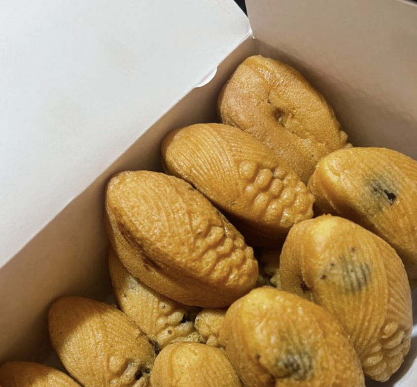

MANJU

INGREDIENTS
80 grams Cake flour
1/4 tsp Baking soda (or baking powder)
30 grams Sugar
15 grams Condensed milk
10 grams Butter
25 grams Egg
30 grams Store-bought anko
INSTRUCTIONS
-
Add the egg, sugar, condensed milk, and melted butter into a bowl, mixing with each addition.
-
Sift in the cake flour and baking soda, and mix with a rubber spatula.
-
Once the dough comes together, wrap in plastic wrap, and let rest in the fridge for about 30 minutes.
-
In the meantime, divide the anko into 9 portions and roll up into balls.
-
Divide the rested dough into 9 pieces, roll them out (with your hands is fine), wrap up the anko, and place them on a baking sheet lined with parchment paper. Make sure place them seam side down.
-
Brush the surface with the leftover egg using the back of a spoon or a brush, and bake for 10 to 15 minutes in a preheated 180℃ oven. (Adjust the time accordingly.)
-
It's done. Once cooled, wrap in plastic wrap and they will become even moist with time.
-
I used chunky anko this time, but you can also use a finely mashed anko, or put a chestnut inside!